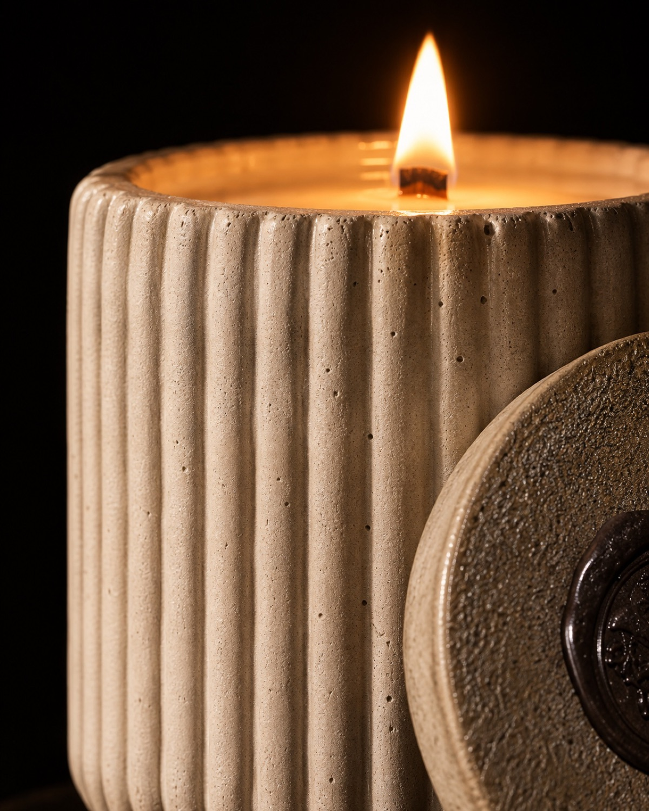

Accenderebene
Pochi gesti perché la candela bruci pulita, in modo uniforme, fino all’ultimo centimetro. E perché il vaso resti con te dopo.
- i
La prima accensione
La prima volta lascia accesa la candela finché la cera non si scioglie fino ai bordi del vaso. Di solito servono due o tre ore.
Se la spegni prima, la cera ricorda quel cerchio e le volte dopo scava un tunnel al centro.
- ii
Lo stoppino di legno
Prima di ogni accensione accorcialo a pochi millimetri e togli la parte annerita. La fiamma resta bassa e ferma, e il crepitio più pulito.
Il legno si accende meglio tenendo la fiamma inclinata, per qualche secondo, lungo tutto lo stoppino.
- iii
Quattro ore, non di più
Non tenerla accesa più di quattro ore di fila. Poi spegnila, lasciala raffreddare e riaccendila un’altra sera.
Per spegnerla, meglio coprire la fiamma che soffiarla: niente fumo, niente schizzi di cera.
- iv
Le candele senza vaso
Trilogy Flames, il Kit Relax, i fiori di Fioritura Eterna e dello Scrigno si appoggiano sempre su un piattino o un vassoio resistente al calore.
- v
Il vaso dopo
Il cemento si scalda: spostalo solo a candela spenta e fredda. Quando la cera è finita, togli il fondo rimasto con acqua calda.
Il vaso resta: per un fiore, per le penne, per una piccola pianta.
Sei regole
Spegnila quando esci dalla stanza o vai a dormire.
Finestre aperte e ventilatori fanno tremare la fiamma e annerire il vaso.
Tende, carta, libri, rami secchi: almeno una spanna di distanza.
Una superficie piana, che non tema il calore.
Lontano da bambini e animali.
Quando sul fondo ne resta un centimetro, la candela ha finito il suo lavoro.